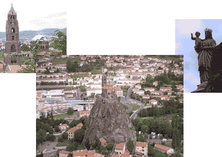

HOTEL
Situé à l'entrée de la ville, à 5 mn de la gare
et à 10 mn du centre ville,
Nous disposons de 24 chambres rustiques
équipées du confort moderne :
- Baignoire ou douche à l'italienne
- WIFI gratuit, Canal satellite, Canal+

Nos chambres sont climatisé et certaines,
côté cour au calme, ont un balcon.
Le stationnement dans la rue est facile.
une place dans un parking fermé possible,
ou mieux, un garage individuel fermé
pour une location à la semaine
(idéal pour les marcheurs !)
Nous vous proposons la formule demi-pension (ou soirée-etape)
comprenant la chambre ,le dîner et le petit-déjeuner , idéal pour les pélerins ou les commerciaux .